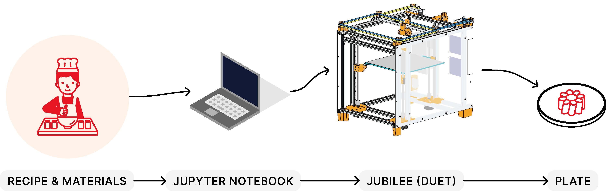
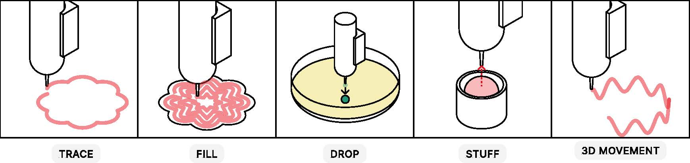
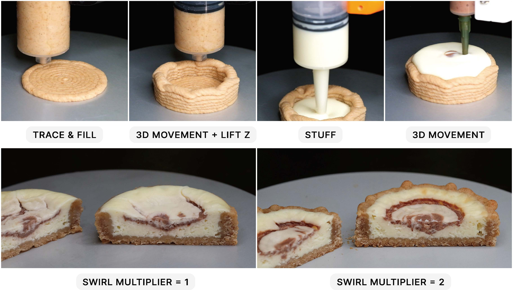

Abstract
Current 3D food printing systems impose engineering paradigms onto culinary practice, requiring users to design food as geometric models and slice them into discrete layers. This approach fundamentally misunderstands how humans create food – through continuous cooking actions like piping, filling, and spreading that encode centuries of embodied knowledge. We present SPICE (Smart Production of Individualized Culinary Essentials), a multi-material 3D printing system that reimagines food fabrication through action-oriented path planning derived from traditional cooking techniques.
I am always passionate about food and technology. I always pay extra attention to how traditional knowledge transfers to computational controls. In this work, I reflect on people actually handle tools in the kitchen. Existing systems treat food like plastic parts. You design a 3D model, slice it into layers, and print. But that's not how people cook.
When you pipe frosting on a cake, you're not thinking about layers. You're making continuous gestures like spirals, swirls, smooth motions. When you stuff dumplings, you fill them in one motion, not layer by layer. So I built SPICE to work the way cooking actually works.
I set up a Jubilee 3D printer with four syringe extruders that can swap between different ingredients. Then I wrote code that translates selected cooking primitives (trace, fill, drop, stuff, move) into continuous toolpaths. Instead of slicing models, you can program gestures.
I was inspired by the FRIENDS episode "The One With All The Cheesecakes" where Rachel and Chandler ate cheesecake on the hallway floor. That scene always stuck with me—something about how irresistible a good cheesecake is.

So I adapted their recipe and 3D printed it on Jubilee. The system creates a graham cracker crust, fills it with cream cheese custard, and then embeds fruit swirls. The swirl is programmed as a continuous 3D motion and can be adjusted by changing a multiplier to enhance the flavor.

It turns out when you design computational tools around how people actually do things, rather than forcing them to think like engineers, the tools work better. And you get to eat cheesecake.
Bibtex
@inproceedings{luo2026piping,
title={From Piping to Printing: An Action-Based Approach to Computational Food Fabrication},
author={Luo, Danli and Ingram, Wade and Danielescu, Andreea},
booktitle={Twentieth International Conference on Tangible, Embedded, and Embodied Interaction},
series={TEI '26},
year={2026},
publisher={ACM},
address={New York, NY, USA},
pages={1--15},
doi={10.1145/3731459.3773322}
}